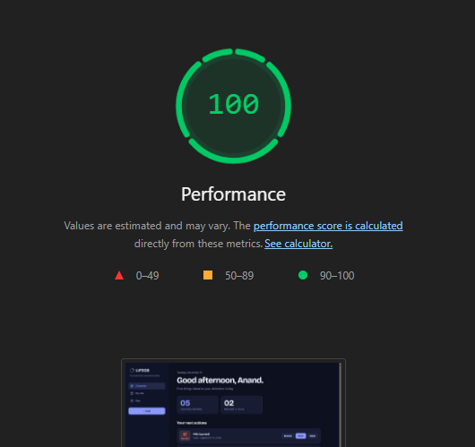

Team 9 — Web Programming | Gachon University
When the initial Lighthouse accessibility audit was run on the project codebase, zero accessibility violations, errors, or warnings were identified. Because accessibility standards were built into the project from day one, no retroactive fixes were required.
<button> elements rather than generic <div> tags, guaranteeing built-in keyboard navigation and screen-reader focus support.
<h1> down to <h3>), allowing assistive technologies to navigate the layout seamlessly without skipping levels.
Manual testing confirmed that the entire page can be navigated sequentially using only the Tab key, complete with visible focus rings. Automated Lighthouse scans consistently verified a clean 100/100 score with zero accessibility barriers.
